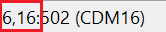
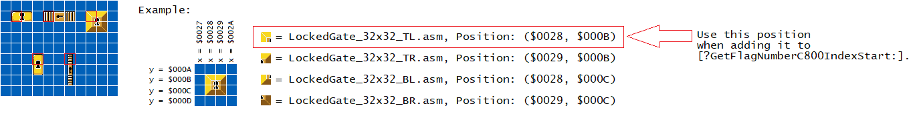
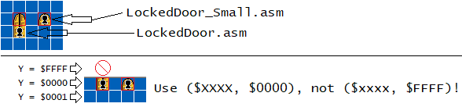

This ASM resource allows you to have more than 128 bit flags in your entire game. This is useful for exploration-based hacks should you have blocks that shouldn't respawn when the player refreshes the level. An example is locked doors and keys, especially involving backtracking. Another use, which is minor, is SA-1 hacks, since blocks are processed during SA-1, they do not have access to WRAM (RAM address in banks $7E and $7F), thus the blocks themselves cannot use $7FC060 directly. Instead have blocks to use banks $40 or $41, then uberasm tool to transfer that to $7FC060 making it possible for custom blocks to use CM16 blocks on a SA-1 hack.
Note that this isn't really a true conditional map 16 expansion, this is because this ASM resource relies on Lunar Magic's conditional map16 blocks ($7FC060 to $7FC06F), therefore, you can use up to 128 flags per level (using within a group of 128 bits in “!Freeram_MemoryFlag”). This ASM resource just creates a new RAM area defined as !Freeram_MemoryFlag and “divide” them into groups of 16 bytes (I call them “Group-128”, 16 bytes = 128 bits). Depending on what level you are in, during level load, all 16 bytes within a specified group (set by the table in UberasmTool/Library/MBCM16WriteGroup128To7FC060.asm under the sublabel .OneHundredTwentyEightFlagGroupList) will copy itself into $7FC060-$7FC06F to make the blocks spawn, not spawn anymore, or remain changed when the player leaves and return.
Keep in mind, you are not forced to use a different group-128 for every level, you can reuse the same group-128 in multiple levels should the level uses less than 128 flags. Just be careful not to have a separate block in another level be inadvertently set the same LM flag number (which also means the same flag number for !Freeram_MemoryFlag) as the other level of the same group (example: Two levels, 105 and 106, both use group 0, one block is a key set to 0, the other level also have a key set to 0, picking up one key will affect the spawning of the other key, which you should avoid).
!Freeram_MemoryFlag is NumberOfGroups*$10 bytes long. NumberOfGroups is how many group-128s you wanted, ranging from 1-16. Therefore, the absolute limit on how many bit flags you can have in the entire game is 2048. I don't think any hack would ever need this many flags, even if all the playable levels on an average hack uses this mechanic.
This RAM acts as a universal global memory, and shouldn't be reset on level load and overworld (it must be “untouched” RAM initialized by the SRAM/BWRAM patch when the user starts the game).
The blocks included in this ASM resources is a key (collectible and not carried like a key sprite), locked gates* and doors*. How this works using this resource is that unlike the hack Mushroom Kingdom - Under Crimson Skies, this ASM pack do not use duplicate map16 blocks each having their own flag to write, instead when the player triggers the block, the block checks what level, if its on layer 1 or 2, and its location within the level. If all 3 of these attributes are found on a specific index number, will use that index number to determine what flag number to set/reset a bit in !Freeram_MemoryFlag, otherwise it will do nothing as a failsafe.
(*I termed “gates” and “doors” as two separate things: “gates” refer to solid objects that acts as a barrier to prevent the player from accessing other parts of the level the player is currently in, while “doors” is an exit-enabled object that teleports the player to another level. This terminology is to prevent confusion since both in real-life terms, they control access to another point.)
This is the type of ASM resource that you may have to come back, edit stuff, and then re-insert periodically as you develop your hack, since this works in tandem of you creating levels. Instructions below marked with “[Return later]” indicates you to perform these steps when re-inserting in your hack.
I've included a sample level (for level 105) demonstrating the key blocks, along with sample ASM tables (what flags the blocks should be using and what group-128 to use in level 105).
If you are using this on SA-1, LM version 3.10 (September 24, 2019) and before it, they have a bug I've reported that causes blocks to fail to spawn (or spawn when it shouldn't (never experienced this))
even when $7FC060-$7FC06F bits are set (or clear) on certain emulators. This is due to the fact that level load code is processed under SA-1, so WRAM ($7Exxxx and $7Fxxxx) access
will not work. So
don't use this ASM resource on an SA-1 hack using LMv3.10 (or any previous LM versions), as blocks may appear (or not) incorrectly can occur on certain emulators.
EDIT: This is now fixed on version 3.11 (released on 2020/02/09)
Freerams and tables:
Because the blocks check their locations and level numbers, you must open these files:
UberasmTool/Library/MBCM16WriteGroup128To7FC060.asm, this determines what group-128 to use for each level using the MBCM16.
UberasmTool/Library/MBCM16DisplayKeyCounter, this displays the key counter on the heads-up display (HUD) of how many keys of a particular level.
CustomBlocks/routines/SearchBlockFlagIndex.asm, blocks' routine to find out what flag they are.
CustomBlocks/routines/GetWhatKeyCounter, blocks' routine to find what key to use.
These contains a list of level numbers, block location within level and group numbers (times $10), and what key counter for the level to use. Comments should fully explained how each table correspond. Even better is that the JS tool (linked previously) also print out placeholder template tables (with comments pointing of each item and their flag numbers/Level ID) for you to copy.
Open FlagMemoryDefines/Defines.asm and edit !Freeram_MemoryFlag if you find RAM conflicts with another ASM resource. I highly recommend make note as (including before and after) you insert any patches (including third party) so it is easier to keep track of. There's also other settings you can play around with. Also, this assumes you are using the super status bar patch, if you are not using that and/or using other patches, adjust the defines under “HUD stuff”.
Open either SRAM or BWRAM plus depending on if your hack is SA-1 or not. Now again, using the JS tool, copy the given ASM tables from an obviously named section and paste them accordingly. Remember that the order in table and defaults must match (the first dl $xxxxxx : dw $yyyy goes to the first group of bytes in “defaults”, second on second, and so on). Remember that this is the default value they would be when you start a new game.
Keep in mind about LM's CM16:
With “Always show objects” unchecked, if the flag is 0, it uses tile $0025, otherwise use the tile you've just placed down. If you want something to not exist but later in the game to appear forever, then you should default the flag to 0 and SET the bit on an event the player does something to make it appear. To make it disappear and stays gone forever, you should default the flag to 1 and CLEAR the flag on an event the player does something to make it gone forever (such as when the player picks up the key).
With “Always show objects” checked, if the flag is 0, it uses the tile you've placed down, otherwise it will use Tile_Youve_Placed_Down+$0100 (example: if you use tile $0425, it will use that tile when the flag is 0, otherwise it will use $0525, which is the next map16 page keeping its low byte).
Seems only useful if you don't want to use tile $0025. To keep things organized when using both settings (“Always show objects” checked for some blocks and unchecked for others), I would recommend having all the default values in this table be set (%11111111) and always clear them when the player triggers something, and have the intended “inital” block state on the second of the two map16 pages ($0525 (inital) → $0425 (block you place)).
Thus, you are not restricted to using all eight ones or all eight zeroes in the bytes.
Uberasm tool insertion
[Return later]In any level that are using the flags, create/edit a .asm file (like Level105.asm), in that file, paste this code:
incsrc "../FlagMemoryDefines/Defines.asm" load: ;Transfer group-128 to $7FC060 JSL MBCM16WriteGroup128To7FC060_LoadFlagTableToCM16 ;[...] RTL main: ;Display key counter on the HUD (during the level at play) LDY #$00 ;>$xx is what key counter to use, as an index from !Freeram_KeyCounter. JSL MBCM16DisplayKeyCounter_DisplayHud ;[...] RTL init: ;Display key counter on the HUD (during screen fading into the level) LDY #$00 ;>$xx is what key counter to use, as an index from !Freeram_KeyCounter. JSL MBCM16DisplayKeyCounter_DisplayHud ;[...] RTL |
Copy the list of blocks in Blocks/list.txt and paste it in GPS's list file. You may need to edit their map16 number (or ID number).
Copy and paste the block and routine ASM files, their folders should have obvious names to know where to put.
[Return later] Make sure you edit the tables in GetWhatKeyCounter.asm and SearchBlockFlagIndex.asm to give it the level number, the layer it is on, its block location and what key counter the blocks should read on a given level number. For block location, If dealing with multiple blocks in a group, such as the locked gates and doors, refer here that it uses their top-leftmost block.
You can set it to write on ANY flag number here if you want other blocks to disappear/appear/change in the other level, regardless of the group number the current level is set to, unlike the limitation to a range of 128 bits. Just avoid using the %SearchBlockFlagIndex() and %GetWhatKeyCounter() routines as they lookup the current level.
Save and run GPS to insert into your game.
Create the Exgraphics and Graphics folder by pressing “Quick Extract GFX from ROM” and “Quick Extract ExGFX from ROM” (red and blue mushroom) if you haven't done so already.
Then paste these files, they should have obvious names, however, for GFX28.bin (status bar tiles), you can either replace the original with that in the “Graphics” folder, or rename it ExGFXYY where YY is the hexadecimal number of what slot you want to insert to (and to use it in a level, it must be on LG1). Now insert the graphics by pressing “Quick Insert GFX and ExGFX to ROM, reload graphics” (yellow mushroom with a red left arrow).
Insert the .map16 file included in this package (located at Blocks/Map16.map16) using Lunar Magic's map16 editor (the button showing a yellow ? block with the red left arrow). By default it should be inserted in page 5-6.
[Return later]^, Every time you place blocks in the level, you have to assign them to their respective flags, this involves
the frequent editing of SearchBlockFlagIndex.asm. While finding the level numbers and what layer
they're on is easy, the block coordinate is displayed LM's status bar on the bottom-left corner of what block your mouse cursor is hovering:

Note that on and after Version 3.03 April 1, 2019, the coordinates are displayed in hexadecimal numbers, before this, they were decimal.
Use the X and Y coordinate for the table ?GetFlagNumberC800IndexStart:. If involving multi-blocks,
such as gates that are more than 1 block wide and/or tall, you would take the top-leftmost block's coordinate of the multi-blocks group (shown in red squares):

When dealing with doors (exit enabled objects that take you to another level), if you have the define setting !TopPart set to !False, (a regular-sized 16x32 door setting that allows any powerup instead of just small mario) the block would use the block position above it (the custom block itself will act as the lower part of the 16x32 door and the top part is the selected coordinate), unless the lower half of the door is at Y=$0000, (the selected coordinate will use Y=$0000 instead of Y=$FFFF):
Small and a normal-sized doors included, you don't have to create a copy and edit the settings to make a small door.
[Return later]Also every time you place these memorized blocks, is that you must select them (all within the group if multi-blocks like the locked gates), then give them their conditional map16 flags by Menubar → Edit → Conditional Direct Map16..., otherwise they'll keep reappearing every level load.
What LMCM16 flag number you should put down is the flag number of !Freeram_MemoryFlag, MOD 128. For example:
| Flag number of !Freeram_MemoryFlag | LM's flag number |
|---|---|
| $000 (Group 0) | $00 |
| $001 (Group 0) | $01 |
| $002 (Group 0) | $02 |
| ... | ... |
| $07E (Group 0) | $7E |
| $07F (Group 0) | $7F |
| $080 (Group 1) | $00 |
| $081 (Group 1) | $01 |
| $082 (Group 1) | $02 |
| ... | ... |
| $0FE (Group 1) | $7E |
| $0FF (Group 1) | $7F |
| $100 (Group 2) | $00 |
| $101 (Group 2) | $01 |
| $102 (Group 2) | $02 |
| ... | ... |
Remember, when the level loads, what group-128 to use to write to $7FC060 is specified in UberasmTool/Library/MBCM16WriteGroup128To7FC060.asm.
With the previously mentioned paragraph, when you choose any group-128, you are bounded to a range of what flag numbers of !Freeram_MemoryFlag to use:
[LowestFlagNumber = GroupNumber * 128] to [HighestFlagNumber = (GroupNumber * 128) + 127]
For example, if level $105 uses group $0, only flags $0-$7F are available in that level, if level $1CB uses group $1,
only flags $80-$FF are available.
Use the block Template_PermaDisappear.asm, place it in the level, and touch it. If it doesn't disappear in a puff of smoke, then that block location isn't assigned to a flag number. You can use other blocks, they will simply do nothing if it doesn't find its location associated to a flag number.
If the block do function but keeps respawning on level load, then that means there is something wrong with the following:
MBCM16WriteGroup128To7FC060.asm (uberasm tool library) isn't set up correctly, set to use the wrong level number, wrong group-128, wrong layer, and/or wrong block C800 positions.
You must've set the block to the wrong flag number that is assigned.
Otherwise if another block in the same level disappears, then you've set the block to the same flag number. This is correct for multi-block gates bigger than a 1x1 block so that the whole door remains gone when unlocked and level refreshes, however if 2+ separate things in the same level uses the same $7FC060 flag number, then both are affected, which any of them have been set to the wrong flag.
You may be asking the question, why does the game lag if the player tries to activate these blocks when they aren't assigned to the list? This is because each frame and each of the player's collision point touches the block, it has to search a long list of flag numbers (and fail to find the matching entry), which tanks the game's performance (a loop with huge number of iterations). The longer the list, the harder the game will slow down. However, if your entire hack does not contain any non-listed MBCM16 blocks (which your hack should have all of them be listed), you shouldn't worry, since the blocks execute for only 1 frame for a listed MBCM16 block the moment the block disappears.
When the player enters an exit-enabled locked door (or, in general, teleport to another level), the key counter on the HUD (heads-up display) will not update until the level the player is heading to is loaded. This is because during level transition, the HUD no longer update the tiles every frame.
You don't have to have all flags to be permanently cleared/set, if you want some levels to only reset them when the player goes to the overworld map via dying, START+SELECT, and beating the level. Just have an ASM file created into uberasm tool's gamemode folder to be called on the list.txt as gamemode 0D (overworld fade-in) or 0E (overworld). I would prefer having this under init: because it is not necessary to “reset” them every frame on the map (reset in quotes, because, as in to restore their original values, not always have them all zero on all flags):
init: ;This will put the flags back to their set position by writing all $FFs: LDX.b #<NumberOfBytes>-1 - LDA #$FF ;>Value to write on each byte. $00 = %00000000, $FF = %11111111. STA <StartingRAMAddress> TXA SEC SBC #$01 TAX BCS - ;>Why am I not using DEX : BPL -? Because then you're limited to indexes $00-$7F. |
;Example: %RRRR----, where R means a bit must be reverted, while - retains its value. ;Clear bits LDA $xxxxxx AND.b #%00001111 ;>AND returns 0s for any matching bit pairs have at least one 0 on either, so AND is used to clear bits. STA $xxxxxx ;>$xxxxxx is now %0000xxxx. ;Set bits LDA $xxxxxx AND.b #%11110000 ;>ORA returns 0s if both matching bit pairs are 0, therefore, ORA is used to set bits. STA $xxxxxx ;>$xxxxxx is now %1111xxxx. |
LDA #$00 STA !Freeram_KeyCounter STA !Freeram_KeyCounter+1 ;[...] |